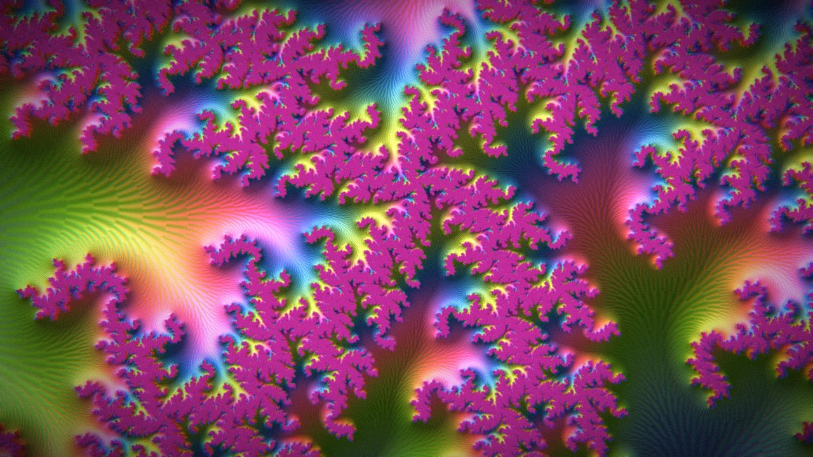
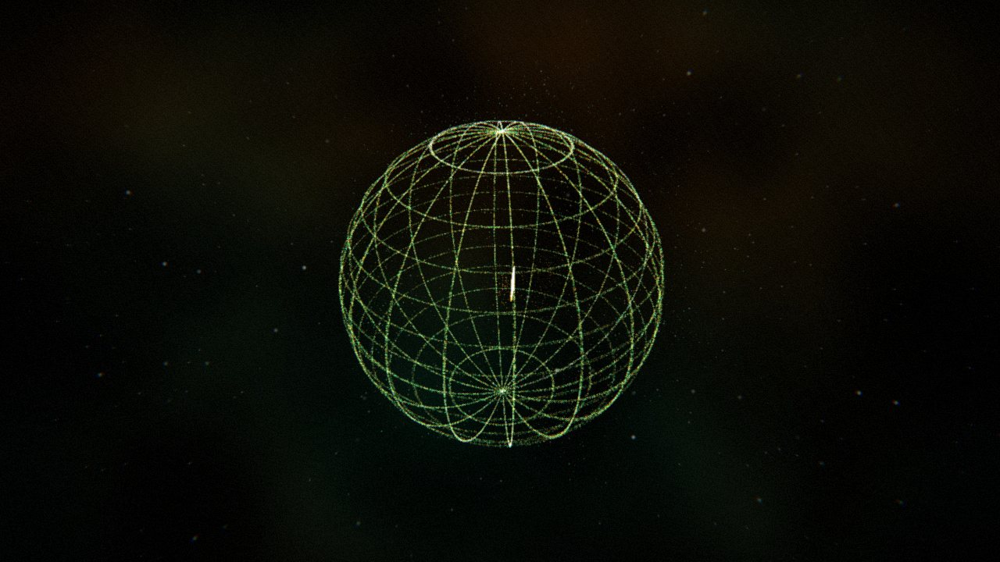
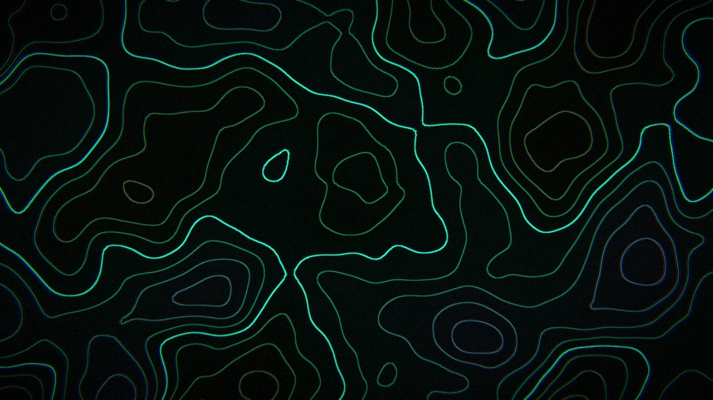
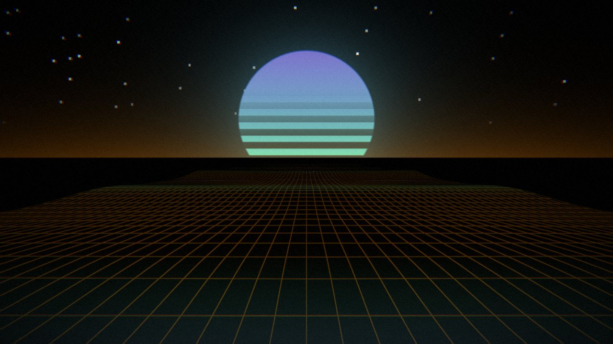
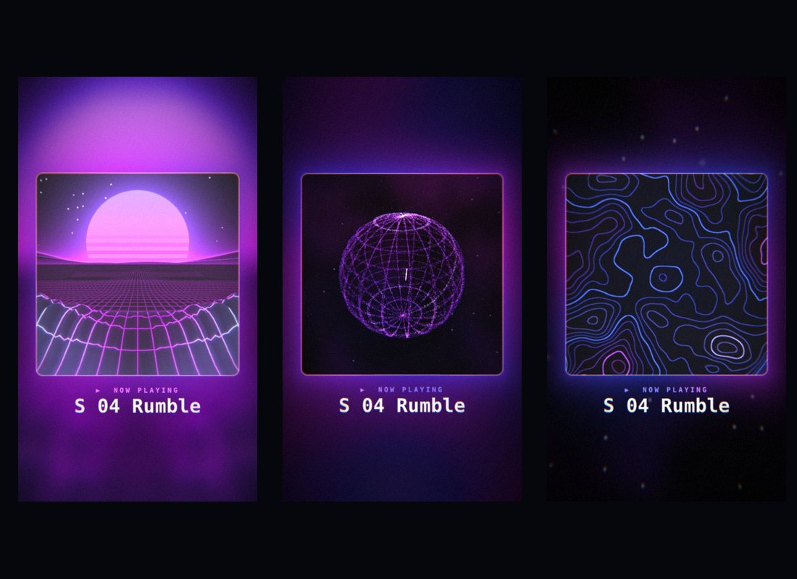
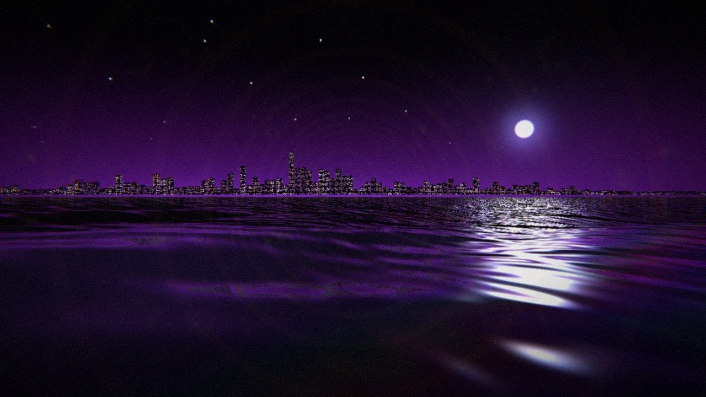
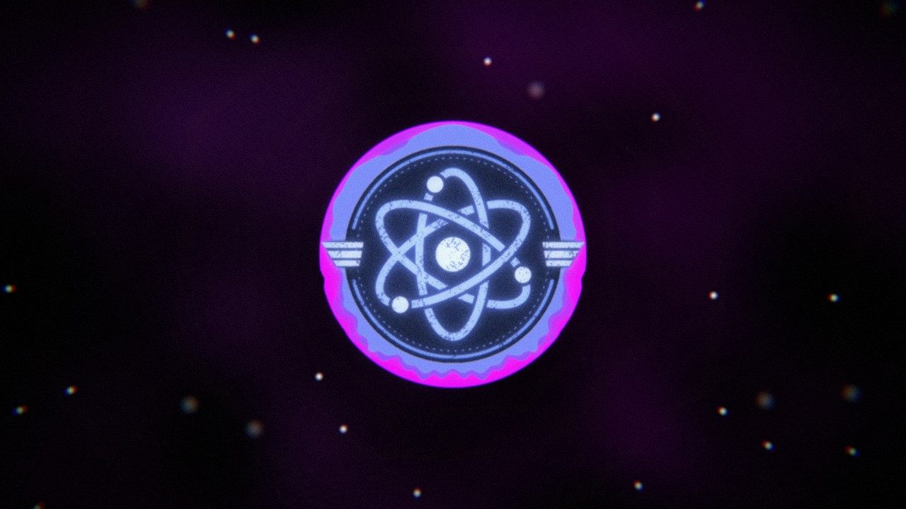
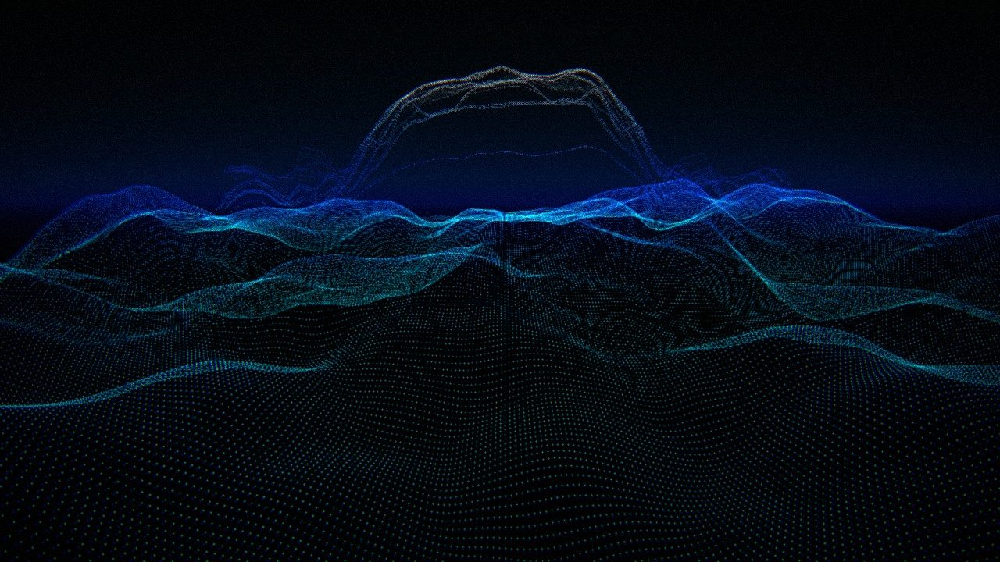
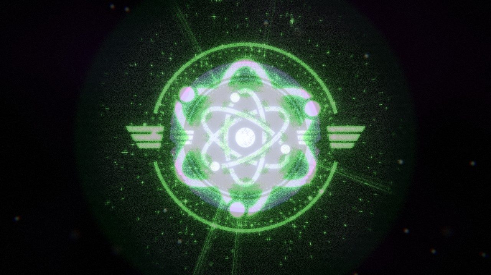

Turn your beat into a music video in a couple of minutes – no editing skills, no timeline work. Afterhours VFX hears every kick, snare and melody, feels the build-up and hits on the drop. Ready for YouTube, TikTok and Reels.
Windows 10/11 · pay once, keep it · no subscription · your music never leaves your machine
How it works
No timeline. No keyframes. No editing skills needed. Your track runs the show.
MP3, WAV or M4A. Afterhours maps every kick, snare, clap and melody – and knows exactly where the build-ups and drops hit.
Choose a scene, a palette and a filter – or hit Auto and let it switch on every drop. One Intensity knob takes it from late-night chill to full rave.
16:9 for YouTube, 9:16 for TikTok and Reels. The desktop app renders every single frame – smooth, up to 4K at 60 fps.
Just added
Fresh looks from the latest updates – rendered straight from the app in 9:16, the way they land on TikTok and Reels.
An analog video synth that looks like a tape from 1997 – flowing, grainy and warm. Loops seamlessly for Spotify Canvas.
A video-feedback tunnel that keeps folding into itself, with spinning shapes and color fringing.
Turn up Density for a solid skull of sparks, with motion blur when you spin it fast.
Slim drops running down the glass in front of any scene.
A shimmering oil-slick film across the whole picture.
Hard black-and-white photocopy grain that turns any scene into a flyer.
The picture drips and smears on the beat.
A retro checkerboard floor with glowing copper bars.
Looks
Straight from the app – no mockups. Fourteen scenes, each moving to your music in its own way, and 35 filters to push any of them further.
An endless dive that accelerates with your track. Pick the pattern – seahorse, starfish, lightning and more.
Neon rings you fly through, reshaping as the song builds.

Thousands of sparks that lock into shapes on every kick.
Layers of sacred geometry, spinning to the groove.

Contour lines that rise and roll with the bass.
From still stars to lightspeed – with your lyrics riding on top.

Your mixdown as a living 3D landscape.
Hard-cut title cards and an eclipse, slammed on every kick and snare.
A breathing atom of light that follows the melody.

A glowing frame built for TikTok, Reels and Shorts. Another scene plays inside, the look flips on every drop, and your song title sits underneath.

A night sea that swells with the bass and shimmers on every hit.

A circular spectrum wrapped around your logo or cover art. Six shapes.

A waveform landscape to fly over and dive into.

A living atom that flares on the kick and throws radiation sparks.
Made for music
Everything you need to finish the video – and nothing that gets in the way.
One picture, 100% still, with a soft fade in and out – the classic look – with the ◆ Type beat style pack. Or let the beat run a full 3D scene for TikTok and Reels. Export 16:9 and 9:16 at once.
Kick, snare, claps and melody each drive their own movement. It feels the build-up, holds its breath before the drop, and hits hard when it lands.
Let the desktop app transcribe the vocals for you, load an .lrc, or tap the timing yourself. Then style every line with 11 text effects – in any font, including your own.
Stack filters, build a palette from one to three colors, or bring your own image, GIF or video. Drop your logo on top and every video carries your brand.
16:9 for YouTube. 9:16 for TikTok, Reels and Shorts. Export the full song or a 15- or 30-second clip, and grab any frame as a PNG thumbnail.
The desktop app renders frame by frame on your graphics card in H.264 or HEVC. No dropped frames, no stutter, no watermark – on any computer.
Seven meters right on the picture – spectrum, oscilloscope, vectorscope, LUFS and more. React live to anything playing on your PC, or go full screen in party mode. Save presets and switch between 13 themes.
Try it
The full web version, with a small watermark. Drop in a song or play the demo track. Effects marked PRO – the skull looks, Disc and eight filters – are yours to try live; exporting them takes the desktop app. Export works in Chrome and Edge.
⚠ Photosensitivity warning: Afterhours VFX shows fast flashing lights that may trigger seizures in people with photosensitive epilepsy. Turn on Calm under Effects to reduce flashing. Read more
On a phone the app works best in its own tab.
Open the web appWant more room? Open it full screen.
Get it
Start free in your browser. Go desktop when it is time to release – full quality, no watermark.
Windows 10/11 · sold securely through Gumroad
FAQ
No. You pay $19.99 once and the desktop app is yours to keep. The web version is free to use.
Gumroad sends you the download link and a license key right away. Install the app, paste the key, and you are ready. One key works on up to 3 computers that you use yourself.
Yes. Videos you make with Afterhours VFX are yours: music releases, client work, ads and social media. You just need the rights to the music and media you put in.
It runs on Windows 10 and 11. A dedicated graphics card makes exports much faster, but it is not required. Try the free web version first. If the desktop app does not run on your computer, email within 14 days and you get a full refund.
Yes. Afterhours VFX is a new app from an independent maker, and Windows shows this warning for programs it has not seen many times yet. Download it only from the Gumroad link on this page, then click More info → Run anyway. If anything feels off, email me before you install – and the 14-day refund applies.
Yes. Load your cover picture, pick the ◆ Type beat style pack under Presets, and export. The picture stays 100% still with a soft fade in and out – or use any scene if you want the beat to drive the visuals. Videos are made in 16:9 for YouTube and 9:16 for TikTok and Reels, and you can export both at once.
Not yet for desktop. The web version runs on a Mac in Chrome or Edge, with export up to 1080p.
No. Everything happens on your own computer. Your songs, images and videos never leave it. The microphone is only used when you turn on Live audio.
Yes. Turn on Calm under Effects, lower the Flash knob, or use a calmer scene. If you publish videos with flashing, consider adding a warning for your viewers.
Try it free on your own track tonight. Like what you see? Get the desktop app and export it in full quality.